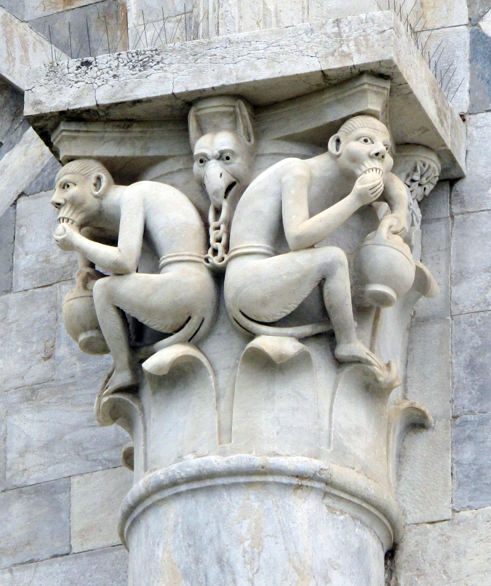
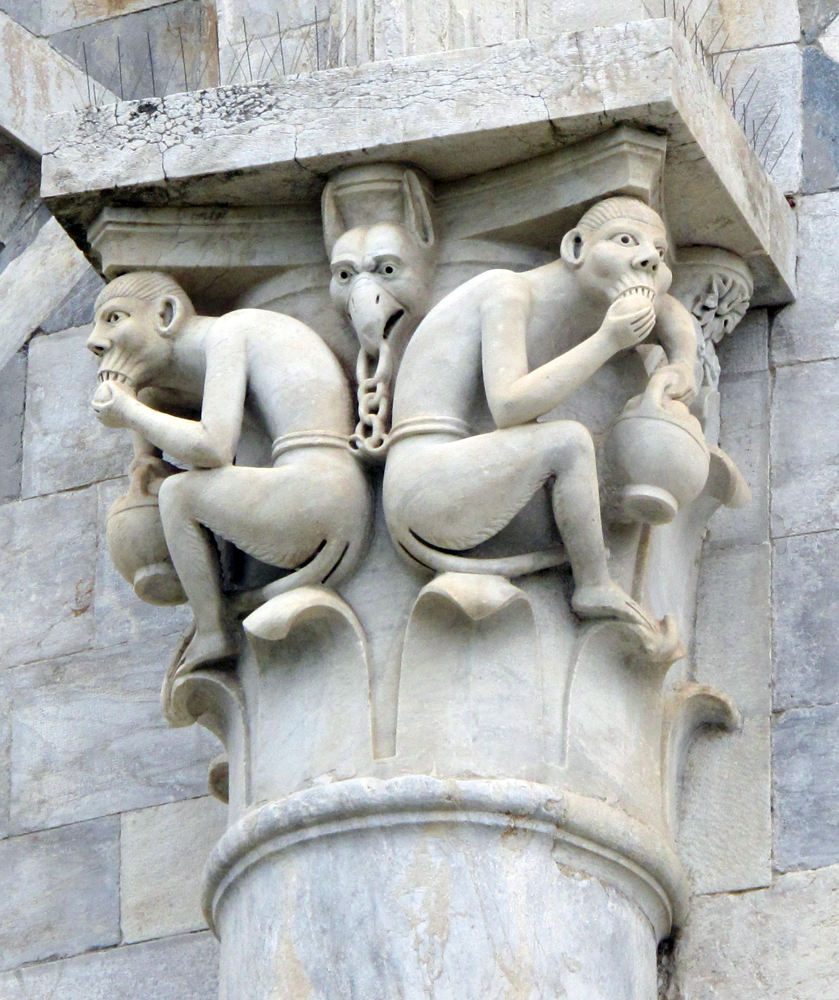
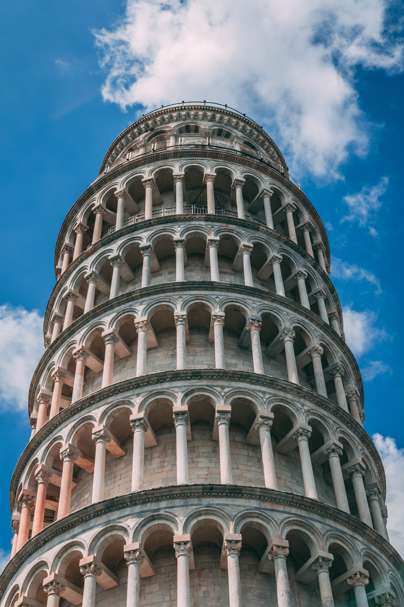
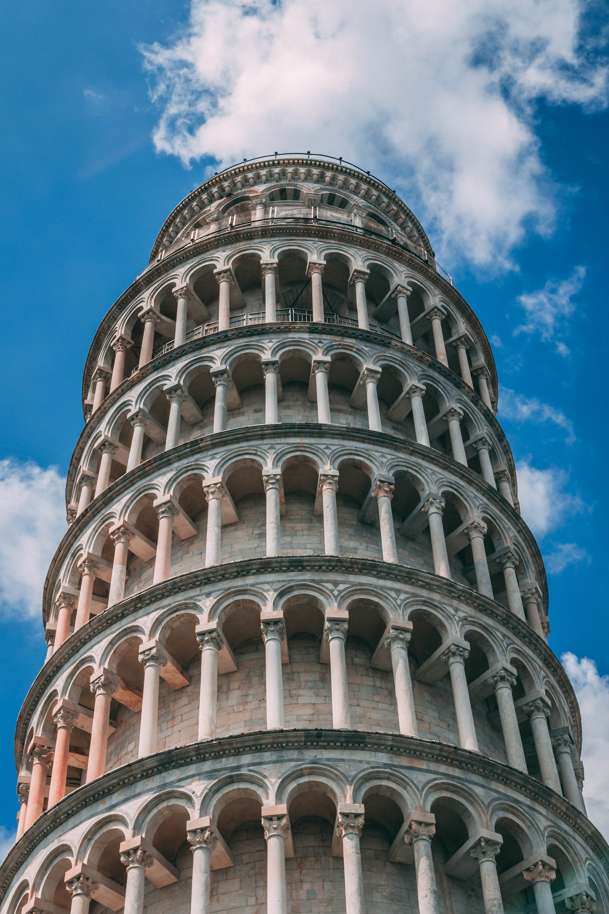
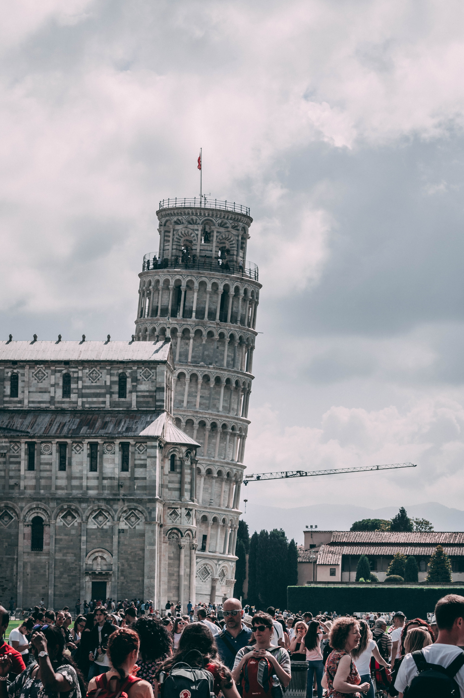
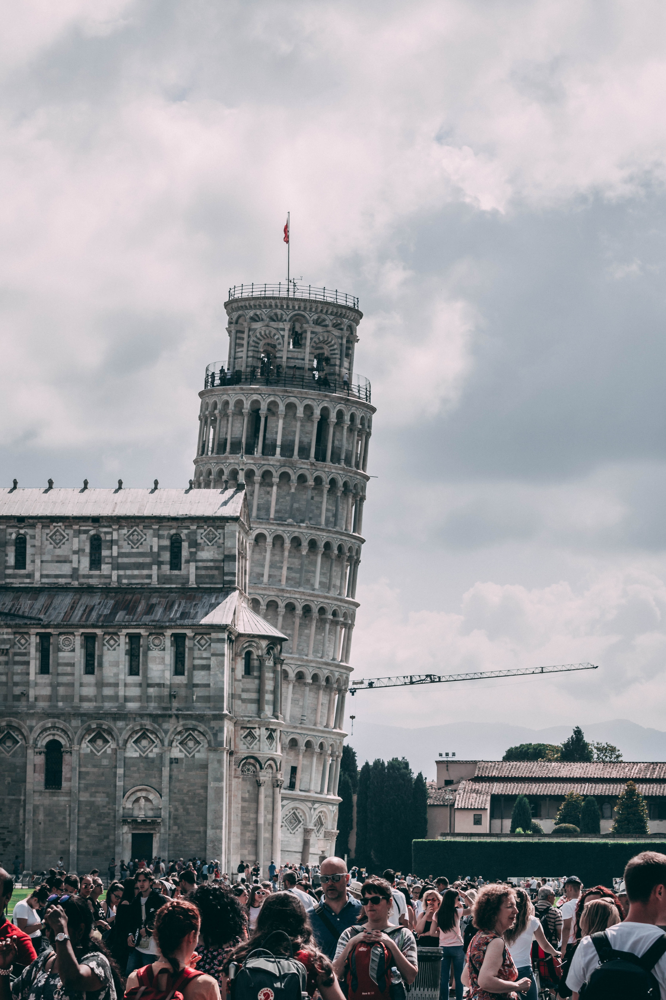

Pisa Tower
The Historical details:
First, The Tower OF Pisa is known for its nearly four-degree lean, the result of an unstable foundation. The tower is one of three structures in the Pisa's Cathedral Square (Piazza del Duomo), which includes the cathedral and Pisa Baptistry.
The height of the tower is 55.86 metres (183 feet 3 inches) from the ground on the low side and 56.67 m (185 ft 11 in) on the high side. The width of the walls at the base is 2.44 m (8 ft 0 in). Its weight is estimated at 14,500 tonnes (16,000 short tons).[2] The tower has 296 or 294 steps; the seventh floor has two fewer steps on the north-facing staircase.
The tower began to lean during construction in the 12th century, due to soft ground which could not properly support the structure's weight. It worsened through the completion of construction in the 14th century. By 1990, the tilt had reached 5.5 degrees.[3][4][5] The structure was stabilized by remedial work between 1993 and 2001, which reduced the tilt to 3.97 degrees.[6]
The height of the tower is 55.86 metres (183 feet 3 inches) from the ground on the low side and 56.67 m (185 ft 11 in) on the high side. The width of the walls at the base is 2.44 m (8 ft 0 in). Its weight is estimated at 14,500 tonnes (16,000 short tons).[2] The tower has 296 or 294 steps; the seventh floor has two fewer steps on the north-facing staircase.
The tower began to lean during construction in the 12th century, due to soft ground which could not properly support the structure's weight. It worsened through the completion of construction in the 14th century. By 1990, the tilt had reached 5.5 degrees.[3][4][5] The structure was stabilized by remedial work between 1993 and 2001, which reduced the tilt to 3.97 degrees.[6]
Architect:
There has been controversy surrounding the identity of the architect of the Leaning Tower of Pisa. For many years, the design was attributed to Guglielmo and Bonanno Pisano,[7] a well-known 12th-century resident artist of Pisa, known for his bronze casting, particularly in the Pisa Duomo.[citation needed] Pisano left Pisa in 1185 for Monreale, Sicily, only to come back and die in his home town. A piece of cast bearing his name was discovered at the foot of the tower in 1820, but this may be related to the bronze door in the façade of the cathedral that was destroyed in 1595. A 2001 study seems to indicate Diotisalvi was the original architect, due to the time of construction and affinity with other Diotisalvi works, notably the bell tower of San Nicola and the Baptistery, both in Pisa.[8][page needed]
.jpg)

 

Construction:
Construction of the tower occurred in three stages over 199 years. On 5 January 1172, Donna Berta di Bernardo, a widow and resident of the house of dell'Opera di Santa Maria, bequeathed sixty soldi to the Opera Campanilis petrarum Sancte Marie. The sum was then used toward the purchase of a few stones which still form the base of the bell tower.[9] On 9 August 1173, the foundations of the tower were laid.[10] Work on the ground floor of the white marble campanile began on 14 August of the same year during a period of military success and prosperity. This ground floor is a blind arcade articulated by engaged columns with classical Corinthian capitals.[citation needed] Nearly four centuries later Giorgio Vasari wrote: "Guglielmo, according to what is being said, in the year 1174, together with sculptor Bonanno, laid the foundations of the bell tower of the cathedral in Pisa".[11]
The tower began to sink after construction had progressed to the second floor in 1178. This was due to a mere three-metre foundation, set in weak, unstable subsoil, a design that was flawed from the beginning. Construction was subsequently halted for almost a century, as the Republic of Pisa was almost continually engaged in battles with Genoa, Lucca, and Florence. This allowed time for the underlying soil to settle. Otherwise, the tower would almost certainly have toppled.[12] On 27 December 1233, the worker Benenato, son of Gerardo Bottici, oversaw the continuation of the tower's construction.[13]
On 23 February 1260, Guido Speziale, son of Giovanni Pisano, was elected to oversee the building of the tower.[14] On 12 April 1264, the master builder Giovanni di Simone, architect of the Camposanto, and 23 workers went to the mountains close to Pisa to cut marble. The cut stones were given to Rainaldo Speziale, worker of St. Francesco.[15] In 1272, construction resumed under Di Simone. In an effort to compensate for the tilt, the engineers built upper floors with one side taller than the other. Because of this, the tower is curved.[16] Construction was halted again in 1284 when the Pisans were defeated by the Genoese in the Battle of Meloria.[10][17]
The seventh floor was completed in 1319.[18] The bell-chamber was finally added in 1372. It was built by Tommaso di Andrea Pisano, who succeeded in harmonizing the Gothic elements of the belfry with the Romanesque style of the tower.[19][20] There are seven bells, one for each note of the musical major scale. The largest one was installed in 1655.[12]
The tower began to sink after construction had progressed to the second floor in 1178. This was due to a mere three-metre foundation, set in weak, unstable subsoil, a design that was flawed from the beginning. Construction was subsequently halted for almost a century, as the Republic of Pisa was almost continually engaged in battles with Genoa, Lucca, and Florence. This allowed time for the underlying soil to settle. Otherwise, the tower would almost certainly have toppled.[12] On 27 December 1233, the worker Benenato, son of Gerardo Bottici, oversaw the continuation of the tower's construction.[13]
On 23 February 1260, Guido Speziale, son of Giovanni Pisano, was elected to oversee the building of the tower.[14] On 12 April 1264, the master builder Giovanni di Simone, architect of the Camposanto, and 23 workers went to the mountains close to Pisa to cut marble. The cut stones were given to Rainaldo Speziale, worker of St. Francesco.[15] In 1272, construction resumed under Di Simone. In an effort to compensate for the tilt, the engineers built upper floors with one side taller than the other. Because of this, the tower is curved.[16] Construction was halted again in 1284 when the Pisans were defeated by the Genoese in the Battle of Meloria.[10][17]
The seventh floor was completed in 1319.[18] The bell-chamber was finally added in 1372. It was built by Tommaso di Andrea Pisano, who succeeded in harmonizing the Gothic elements of the belfry with the Romanesque style of the tower.[19][20] There are seven bells, one for each note of the musical major scale. The largest one was installed in 1655.[12]

.jpg)
History After Construction:
 Between 1589 and 1592,[21] Galileo Galilei, who lived in Pisa at the time, is said to have dropped two cannonballs of different masses from the tower to demonstrate that their speed of descent was independent of their mass, in keeping with the law of free fall. The primary source for this is the biography Racconto istorico della vita di Galileo Galilei (Historical Account of the Life of Galileo Galilei), written by Galileo's pupil and secretary Vincenzo Viviani in 1654, but only published in 1717, long after his death.[22][23]
Between 1589 and 1592,[21] Galileo Galilei, who lived in Pisa at the time, is said to have dropped two cannonballs of different masses from the tower to demonstrate that their speed of descent was independent of their mass, in keeping with the law of free fall. The primary source for this is the biography Racconto istorico della vita di Galileo Galilei (Historical Account of the Life of Galileo Galilei), written by Galileo's pupil and secretary Vincenzo Viviani in 1654, but only published in 1717, long after his death.[22][23] During World War II, the Allies suspected that the Germans were using the tower as an observation post. Leon Weckstein, a U.S. Army sergeant sent to confirm the presence of German troops in the tower, was impressed by the beauty of the cathedral and its campanile, and thus refrained from ordering an artillery strike, sparing it from destruction.[24][page needed][25]
Numerous efforts have been made to restore the tower to a vertical orientation or at least keep it from falling over. Most of these efforts failed; some worsened the tilt. On 27 February 1964, the government of Italy requested aid in preventing the tower from toppling. It was, however, considered important to retain the current tilt, due to the role that this element played in promoting the tourism industry of Pisa.[26]
Starting in 1993, 870 tonnes of lead counterweights were added, which straightened the tower slightly.[27]
The tower and the neighbouring cathedral, baptistery, and cemetery are included in the Piazza del Duomo UNESCO World Heritage Site, which was declared in 1987.[28]
The tower was closed to the public on 7 January 1990,[29] after more than two decades of stabilisation studies and spurred by the abrupt collapse of the Civic Tower of Pavia in 1989.[30][31] The bells were removed to relieve some weight, and cables were cinched around the third level and anchored several hundred meters away. Apartments and houses in the path of a potential fall of the tower were vacated for safety. The selected method for preventing the collapse of the tower was to slightly reduce its tilt to a safer angle by removing 38 cubic metres (1,342 cubic feet) of soil from underneath the raised end. The tower's tilt was reduced by 45 centimetres (17+1⁄2 inches), returning to its 1838 position. After a decade of corrective reconstruction and stabilization efforts, the tower was reopened to the public on 15 December 2001, and was declared stable for at least another 300 years.[27] In total, 70 metric tons (77 short tons) of soil were removed.[32]
After a phase (1990–2001) of structural strengthening,[33] the tower has been undergoing gradual surface restoration to repair visible damage, mostly corrosion and blackening. These are particularly pronounced due to the tower's age and its exposure to wind and rain.[34] In May 2008, engineers announced that the tower had been stabilized such that it had stopped moving for the first time in its history. They stated that it would be stable for at least 200 years.[32]


Earthquake survival:
At least four strong earthquakes have hit the region since 1280, but the apparently vulnerable Tower survived. The reason was not understood until a research group of 16 engineers investigated. The researchers concluded that the Tower was able to withstand the tremors because of dynamic soil-structure interaction (DSSI): the height and stiffness of the Tower, together with the softness of the foundation soil, influences the vibrational characteristics of the structure in such a way that the Tower does not resonate with earthquake ground motion. The same soft soil that caused the leaning and brought the Tower to the verge of collapse helped it survive.[36]
Technical information:
- Elevation of Piazza del Duomo: about 2 metres (6 feet, DMS)
- Height from the ground floor: 55.863 m (183 ft 3+5⁄16 in),[37] 8 stories[38]
- Height from the foundation floor: 58.36 m (191 ft 5+1⁄2 in)[39]
- Outer diameter of base: 15.484 m (50 ft 9+5⁄8 in)[37]
- Inner diameter of base: 7.368 m (24 ft 2+1⁄16 in)[37]
- Angle of slant: 3.97 degrees[40] or 3.9 m (12 ft 10 in) from the vertical[41]
- Weight: 14,700 metric tons (16,200 short tons)[42]
- Thickness of walls at the base: 2.44 m (8 ft 0 in)
- Total number of bells: 7, tuned to musical scale,[43] clockwise:[citation needed
- 1st bell: L'Assunta, cast in 1654 by Giovanni Pietro Orlandi, weight 3,620 kg (7,981 lb)
- 2nd bell: Il Crocifisso, cast in 1572 by Vincenzo Possenti, weight 2,462 kg (5,428 lb)
- 3rd bell: San Ranieri, cast in 1719–1721 by Giovanni Andrea Moreni, weight 1,448 kg (3,192 lb)
- 4th bell: La Terza (1st small one), cast in 1473, weight 300 kg (661 lb)
- 5th bell: La Pasquereccia or La Giustizia, cast in 1262[44] by Lotteringo, weight 1,014 kg (2,235 lb)
- 6th bell: Il Vespruccio (2nd small one), cast in the 14th century and again in 1501 by Nicola di Jacopo, weight 1,000 kg (2,205 lb)
- 7th bell: Dal Pozzo, cast in 1606 and again in 2004, weight 652 kg (1,437 lb)[45]
- Number of steps to the top: 296[46]
About the 5th bell: The name Pasquareccia comes from Easter, because it used to ring on Easter day. However, this bell is older than the bell-chamber itself, and comes from the tower Vergata in Palazzo Pretorio in Pisa, where it was called La Giustizia (The Justice). The bell was tolled to announce executions of criminals and traitors, including Count Ugolino in 1289.[47] A new bell was installed in the bell tower at the end of the 18th century to replace the broken Pasquareccia.[citation needed]
The circular shape and great height of the campanile were unusual for their time, and the crowning belfry is stylistically distinct from the rest of the construction. This belfry incorporates a 14 cm (5+1⁄2 in) correction for the inclined axis below. The siting of the campanile within the Piazza del Duomo diverges from the axial alignment of the cathedral and baptistery of the Piazza del Duomo.[citation needed]
The circular shape and great height of the campanile were unusual for their time, and the crowning belfry is stylistically distinct from the rest of the construction. This belfry incorporates a 14 cm (5+1⁄2 in) correction for the inclined axis below. The siting of the campanile within the Piazza del Duomo diverges from the axial alignment of the cathedral and baptistery of the Piazza del Duomo.[citation needed]
Guinness World Records:
Two German churches have challenged the tower's status as the world's most lopsided building: the 15th-century square Leaning Tower of Suurhusen and the 14th-century bell tower in the town of Bad Frankenhausen.[48] Guinness World Records measured the Pisa and Suurhusen towers, finding the former's tilt to be 3.97 degrees.[40] In June 2010, Guinness World Records certified the Capital Gate building in Abu Dhabi, UAE as the "World's Furthest Leaning Man-made Tower";[49] it has an 18-degree slope, almost five times more than the Pisa Tower, but was deliberately engineered to slant. The Leaning Tower of Wanaka in New Zealand, also deliberately built, leans at 53 degrees to the ground.[50]
Gallery:
 

 
